Basics of SSL Certificate
- SSL (Secure Sockets Layer) certificates are digital certificates that authenticate the identity of a website and encrypt information sent to the server.
- They are crucial for establishing secure connections and protecting sensitive data.
- Key concepts include:
- Handshake Process: The initial step in establishing a secure connection where the client and server agree on the encryption methods and exchange keys.
- Certificate Chain: A sequence of certificates that link the SSL certificate back to a trusted root certificate authority (CA). It helps in verifying the authenticity of the SSL certificate.
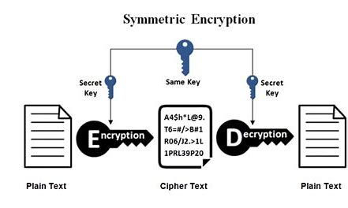
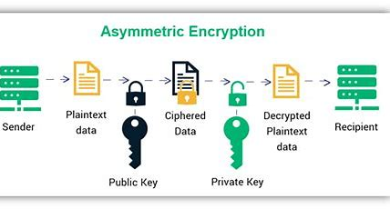
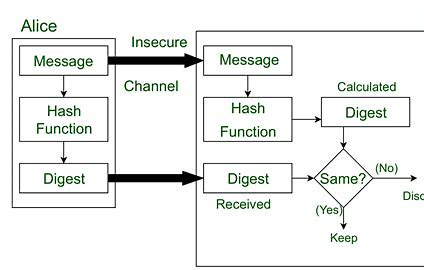
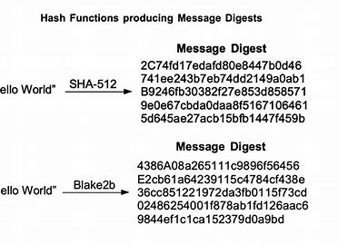
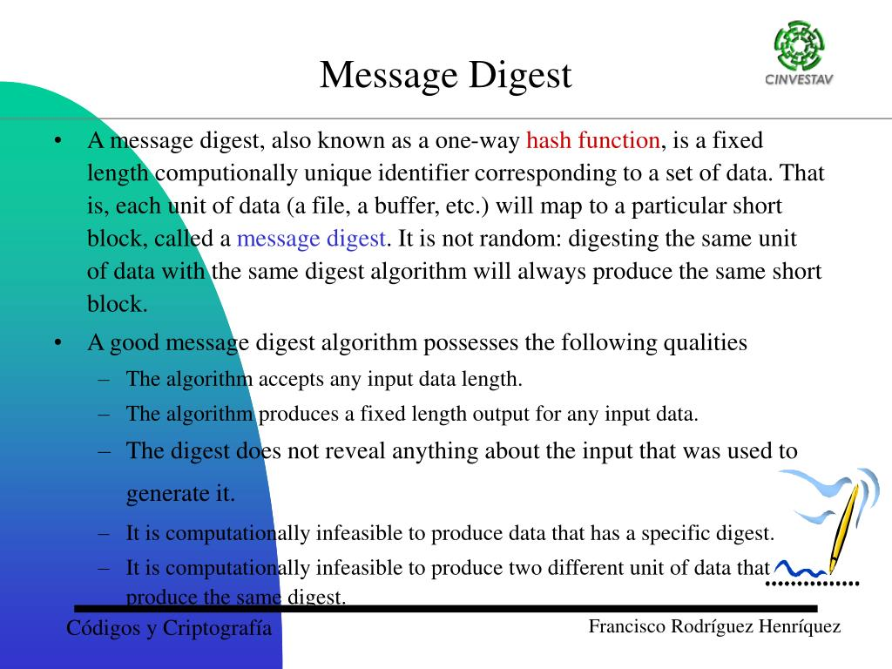
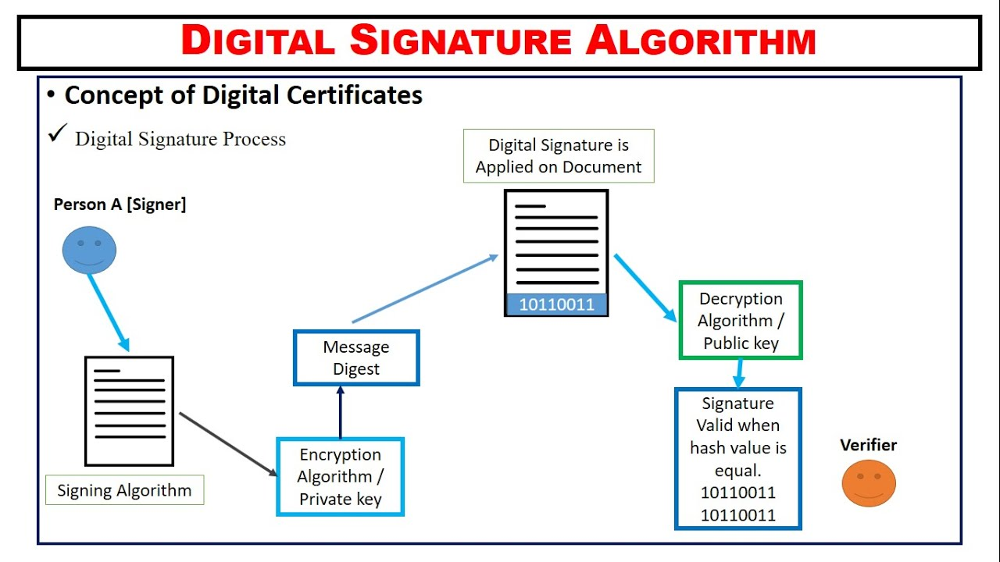
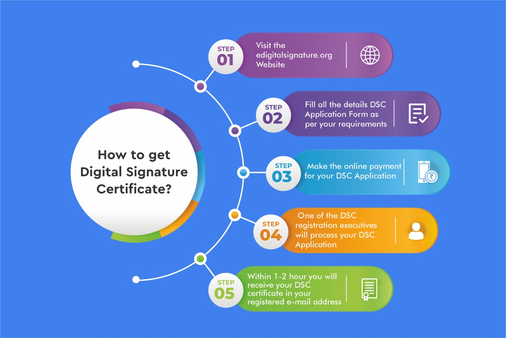
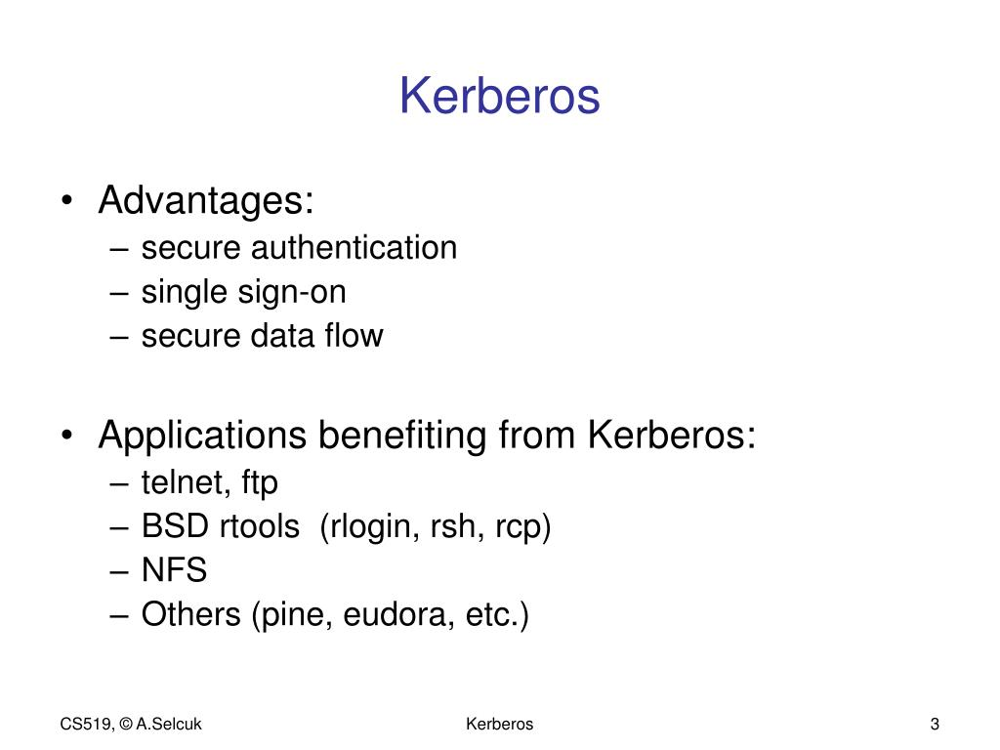
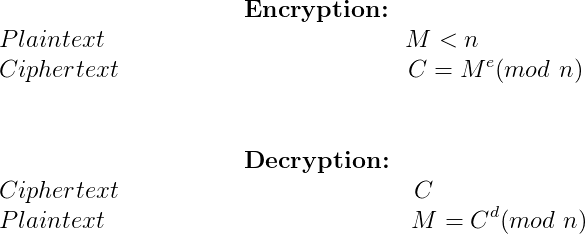
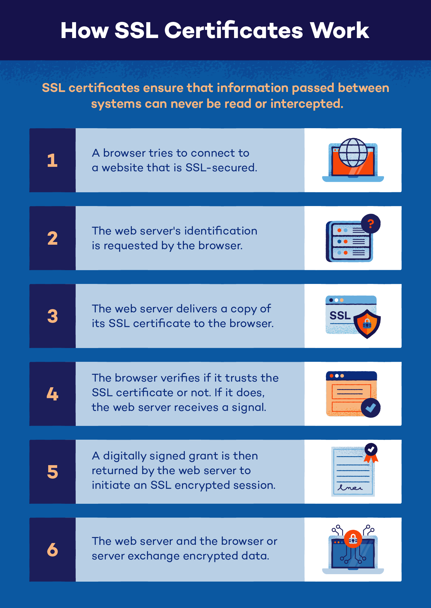
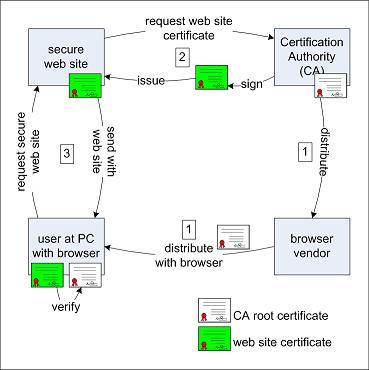
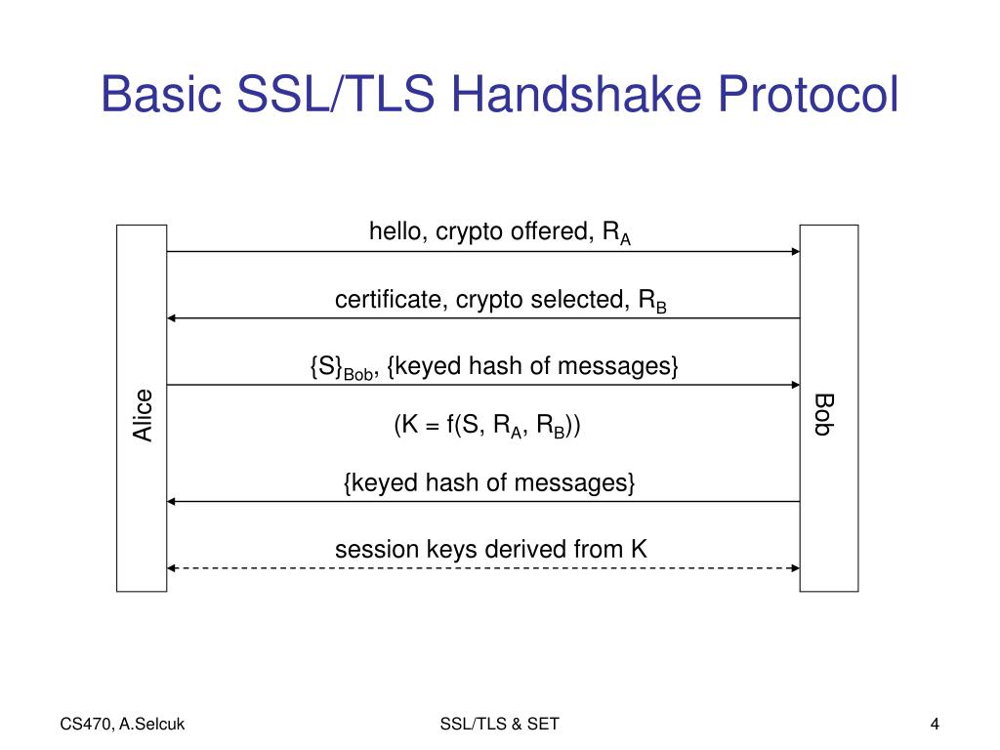
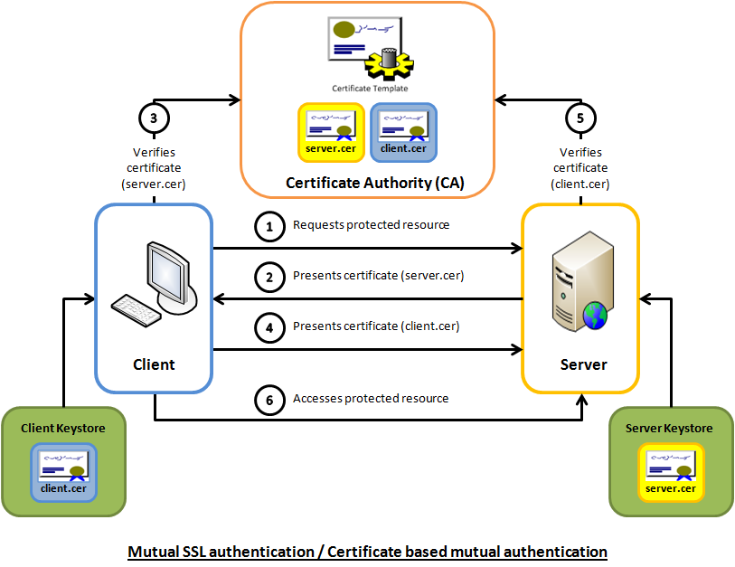